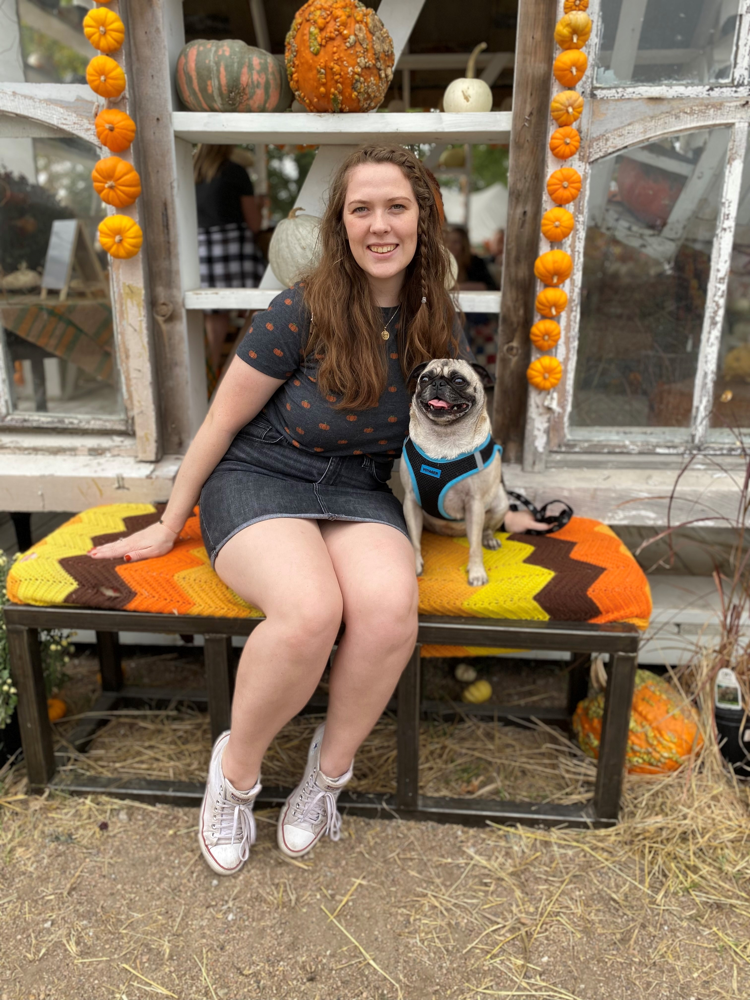
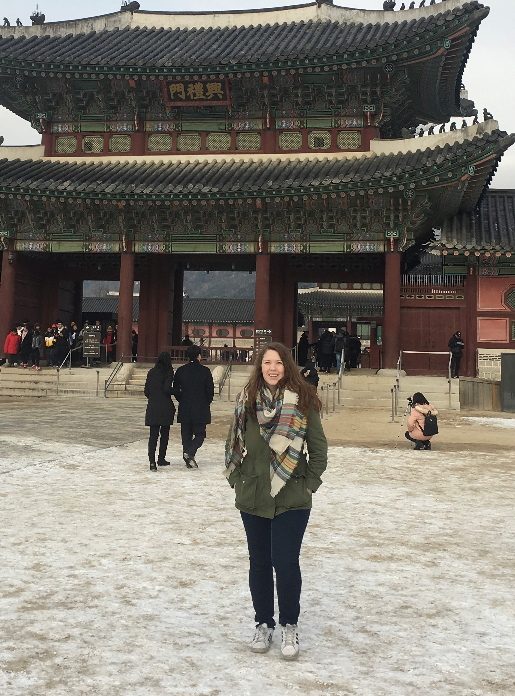

About Me
Hey from a bookworm and lifelong lover of learning! I completed a degree in Biological Systems Engineering at the University of Nebraska-Lincoln and while I studied there I completed a research project at Leibniz Univeritat Hannover in Germany. This ignited my passion for traveling and contstantly learning new things so I also spent a semester studying at Korea University in Seoul, South Korea. I've worked with Ford Credit since March of 2020.
 I want to become a software engineer because I love learning and problem solving. In school I had a very small taste of coding education. I found it very excting and interesting at the time but I was not allowed the time to look into it more. In this opportunity I am hoping to expand my knowledge and learn a valuable skill set that engages with my existing training in problem solving.